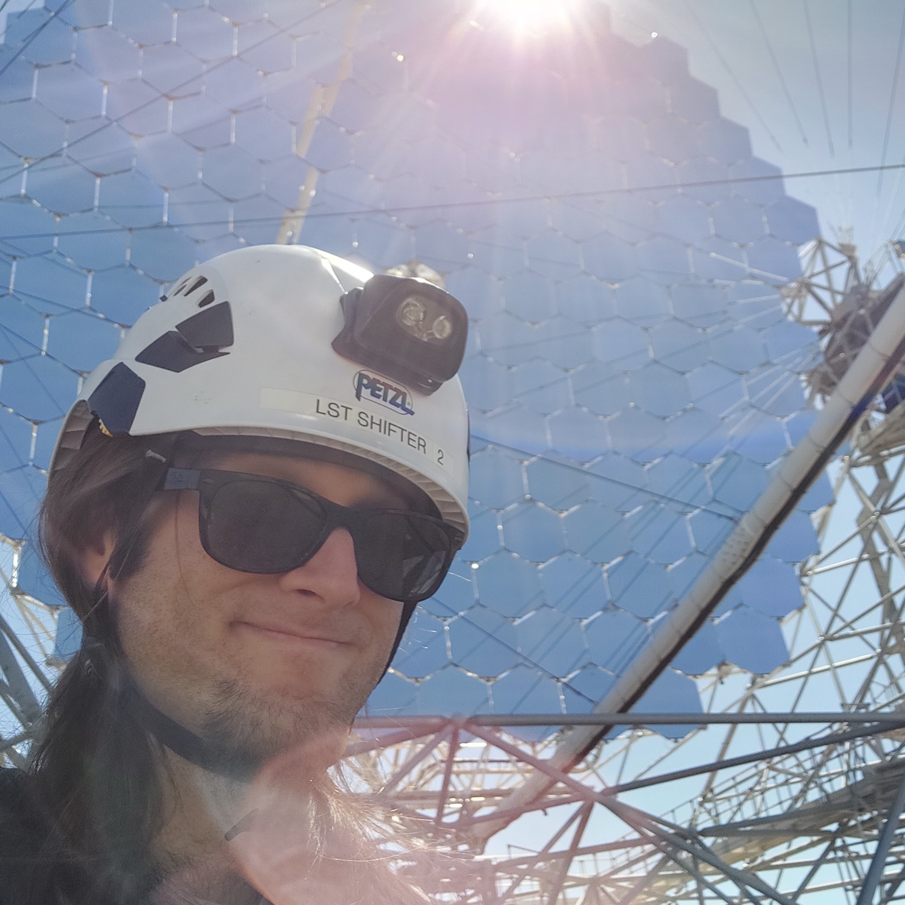

Welcome!
I am Francesco Schiavone, PhD in Astroparticle Physics, based in Bari, IT.
I work in the field of very-high-energy gamma-ray astrophysics, studying both real and simulated data
from Cherenkov telescopes.
I am involved in the CTAO, LST and MAGIC collaborations.I decided to open this personal page, handcoded from the bottom up, because I do many things and I wanted a nice, semi-professional space to keep them all together. Plus, teaching yourself a bit of HTML/CSS, networking, and self-hosting never hurts in the long run. Here you can find some information about my research and whatever else I enjoy doing, including the construction of this website.
In my free time I like to play music (mainly on the bass guitar), listen to records, cook, read, take photographs, watch films and cuddle with my cats, Prometeo and Pandora.
Note: If you are looking for the infamous Italian criminal, he's currently serving his life sentence somewhere else and he's not related to me in any way. Sorry!